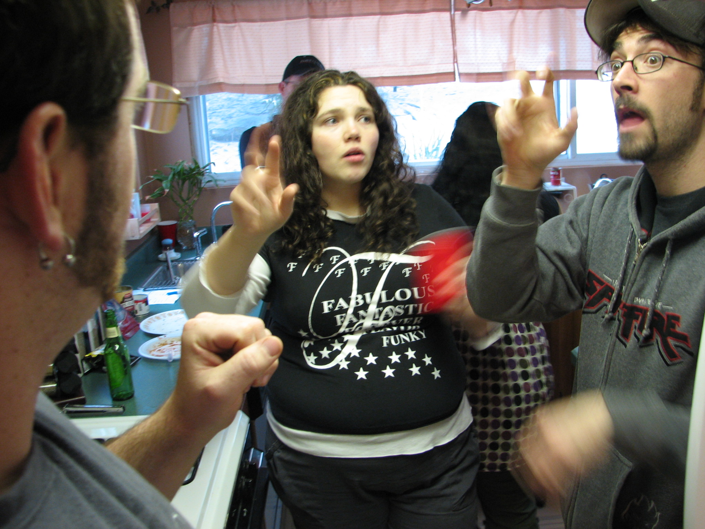

Project title: social distance and mask detection tracking system
We have done a mini project which is social distancing and mask detection tracking system. which mainly focuses on facial and distance detection between two individuals in public areas like malls. If the person is not wearing a mask and not following social distancing while entering malls the system alerts the individual to follow mentioned rules. Here we have used CNN tools majorly in this project. in CNN tools we have particularly used yolov3 which is a real time object detection algorithm which helps in identifying specific objects in the video or live feed.
Project title: Image based sign language translation system
This project proposes a system that recognises the hand gestures using deep leaning algorithms. This project mainly helps in understanding deaf and dumb people's sign language by a normal individual. This system will detect the sign of a deaf and dumb person and let us know the meaning of that sign so that a normal individual can give a reply based on that sign language. Here we have used CNN particularly vgg19 to process the image and predict the gesture of deaf and dumb.
